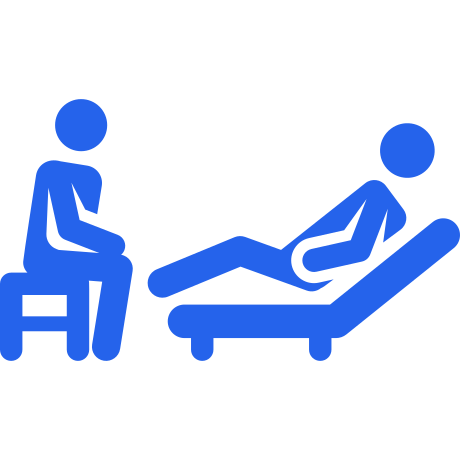

منصة رقمية لأخصائي الصحة النفسية
تشخيص مساعد، اختبارات موثوقة،
تتبع شامل — في نظام واحد
من الأعراض إلى التشخيص الفارقي إلى الاختبار والنتائج — كل خطوة تتم على المنصة. كل ذلك محفوظ في السجل ويتحدّث الملف في كل جلسة.


500K+
مستخدم
96%
رضا المستخدمين
كيف تعمل المنصة؟
ست خطوات متكاملة من الأعراض حتى الحفظ في ملف المريض
1
إدخال الأعراض
سجّل أعراض المريض بسرعة ودقة في نظام موحد وسهل.
2
التشخيص
محرك المنصة يقترح الاضطرابات المحتملة مرتبة حسب الأرجحية.
3
التشخيص الفارقي
قارن بين الاضطرابات المتشابهة للوصول إلى النتيجة الأدق.
4
الاختبارات
طبّق الاختبارات المعتمدة مباشرة على المنصة بسهولة.
5
نتائج الاختبار
احصل على النتائج والدرجات فورًا بشكل واضح ومفهوم.
6
حفظ الملف
يُحفظ كل شيء في ملف المريض ويتحدّث مع كل جلسة.
Q&A أسئلة شائعة
1 كم عدد الاختبارات الموجودة على المنصة؟
أكثر من 25 اختبارًا نفسيًا معتمدًا، وتُضاف اختبارات جديدة باستمرار.2 هل تعتمدون على التحديثات الجديدة لـ DSM-5-TR و ICD-11؟
نعم، نعتمد أحدث إصدارات الدليل التشخيصي والتصنيف الدولي، ونحدّث القاعدة دوريًا.3 هل بيانات مرضاك محمية وسرية؟
بالتأكيد، تُشفّر جميع البيانات وفق أعلى معايير الأمان ولا تُشارك مع أي طرف ثالث.